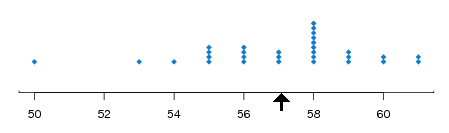
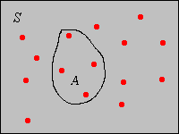
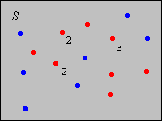

Recall the basic model of statistics: we have a population of objects of interest, and we have various measurements (variables) that we make on the objects. We select objects from the population and record the variables for the objects in the sample; these become our data. Our first discussion is from a purely descriptive point of view. That is, we do not assume that the data are generated by an underlying probability distribution. However, recall that the data themselves define a probability distribution.
Suppose that \(\bs{x} = (x_1, x_2, \ldots, x_n)\) is a sample of size \(n\) from a real-valued variable. The sample mean is simply the arithmetic average of the sample values: \[ m = \frac{1}{n} \sum_{i = 1}^n x_i \]
If we want to emphasize the dependence of the mean on the data, we write \(m(\bs{x})\) instead of just \(m\). Note that \(m\) has the same physical units as the underlying variable. For example, if we have a sample of weights of cicadas, in grams, then \(m\) is in grams also. The sample mean is frequently used as a measure of center of the data. Indeed, if each \(x_i\) is the location of a point mass, then \(m\) is the center of mass as defined in physics. In fact, a simple graphical display of the data is the dotplot: on a number line, a dot is placed at \(x_i\) for each \(i\). If values are repeated, the dots are stacked vertically. The sample mean \(m\) is the balance point of the dotplot. The image below shows a dot plot with the mean as the balance point.

The standard notation for the sample mean corresponding to the data \(\bs{x}\) is \(\bar{x}\). We break with tradition and do not use the bar notation in this text, because it's clunky and because it's inconsistent with the notation for other statistics such as the sample variance, sample standard deviation, and sample covariance. However, you should be aware of the standard notation, since you will undoubtedly see it in other sources.
The following exercises establish a few simple properties of the sample mean. Suppose that \(\bs{x} = (x_1, x_2, \ldots, x_n)\) and \(\bs{y} = (y_1, y_2, \ldots, y_n)\) are samples of size \(n\) from real-valued population variables and that \(c\) is a constant. In vector notation, recall that \(\bs{x} + \bs{y} = (x_1 + y_1, x_2 + y_2, \ldots, x_n + y_n)\) and \(c \bs{x} = (c x_1, c x_2, \ldots, c x_n)\).
Computing the sample mean is a linear operation.
The sample mean preserves order.
Parts (a) and (b) are obvious from definition . Part (c) follows from part (a) and the linearity of expected value. Specifically, if \(\bs{x} \le \bs{y}\) (in the product ordering), then \(\bs{y} - \bs{x} \ge 0\). Hence by (a), \(m(\bs{y} - \bs{x}) \ge 0\). But \(m(\bs{y} - \bs{x}) = m(\bs{y}) - m(\bs{x})\). Hence \(m(\bs{y}) \ge m(\bs{x})\). Similarly, (d) follows from (b) and the linearity of expected value.
Trivially, the mean of a constant sample is simply the constant. .
If \(\bs{c} = (c, c, \ldots, c)\) is a constant sample then \(m(\bs{c}) = c\).
Note that
\[m(\bs{c}) = \frac{1}{n} \sum_{i = 1}^n c_i = \frac{n c}{n} = c\]As a special case of these results, suppose that \(\bs{x} = (x_1, x_2, \ldots, x_n)\) is a sample of size \(n\) corresponding to a real variable \(x\), and that \(a\) and \(b\) are constants. Then the sample corresponding to the variable \(y = a + b x\), in our vector notation, is \(\bs{a} + b \bs{x}\). The sample means are related in precisely the same way, that is, \(m(\bs{a} + b \bs{x}) = a + b m(\bs{x})\). Linear transformations of this type, when \(b \gt 0\), arise frequently when physical units are changed. In this case, the transformation is often called a location-scale transformation; \(a\) is the location parameter and \(b\) is the scale parameter. For example, if \(x\) is the length of an object in inches, then \(y = 2.54 x\) is the length of the object in centimeters. If \(x\) is the temperature of an object in degrees Fahrenheit, then \(y = \frac{5}{9}(x - 32)\) is the temperature of the object in degree Celsius.
Sample means are ubiquitous in statistics. In the next few paragraphs we will consider a number of special statistics that are based on sample means.
Suppose now that \(\bs{x} = (x_1, x_2, \ldots, x_n)\) is a sample of size \(n\) from a general variable taking values in a set \( S \). For \(A \subseteq S\), the frequency of \(A\) corresponding to \(\bs{x}\) is the number of data values that are in \(A\): \[ n(A) = \#\{i \in \{1, 2, \ldots, n\}: x_i \in A\} = \sum_{i=1}^n \bs{1}(x_i \in A)\] The relative frequency of \(A\) corresponding to \(\bs{x}\) is the proportion of data values that are in \(A\): \[ p(A) = \frac{n(A)}{n} = \frac{1}{n} \, \sum_{i=1}^n \bs{1}(x_i \in A)\] Note that for fixed \(A\), \(p(A)\) is itself a sample mean, corresponding to the data \(\{\bs{1}(x_i \in A): i \in \{1, 2, \ldots, n\}\}\). This fact bears repeating: every sample proportion is a sample mean, corresponding to an indicator variable. In the picture below, the red dots represent the data, so \(p(A) = 4/15\).

\(p\) is a probability measure on \(S\).
Parts (a) and (b) are obvious. For part (c) note that since the sets are disjoint, \begin{align} p\left(\bigcup_{i \in I} A_i\right) & = \frac{1}{n} \sum_{i=1}^n \bs{1}\left(x_i \in \bigcup_{j \in J} A_j\right) = \frac{1}{n} \sum_{i=1}^n \sum_{j \in J} \bs{1}(x_i \in A_j) \\ & = \sum_{j \in J} \frac{1}{n} \sum_{i=1}^n \bs{1}(x_i \in A_j) = \sum_{j \in J} p(A_j) \end{align}
This probability measure is known as the empirical probability distribution associated with the data set \(\bs{x}\). It is a discrete distribution that places probability \(\frac{1}{n}\) at each point \(x_i\). In fact this observation supplies a simpler proof of previous theorem. Thus, if the data values are distinct, the empirical distribution is the discrete uniform distribution on \(\{x_1, x_2, \ldots, x_n\}\). More generally, if \(x \in S\) occurs \(k\) times in the data then the empirical distribution assigns probability \(k/n\) to \(x\).
If the underlying variable is real-valued, then clearly the sample mean is simply the mean of the empirical distribution. It follows that the sample mean satisfies all properties of expected value, not just the linear properties in and increasing properties in given above. These properties are just the most important ones, and so were repeated for emphasis.
Suppose now that the population variable \(x\) takes values in a set \(S \subseteq \R^d\) for some \(d \in \N_+\). Recall that the standard measure on \(\R^d\) is given by \[ \lambda_d(A) = \int_A 1 \, dx, \quad A \subseteq \R^d \] In particular \(\lambda_1(A)\) is the length of \(A\), for \(A \subseteq \R\); \(\lambda_2(A)\) is the area of \(A\), for \(A \subseteq \R^2\); and \(\lambda_3(A)\) is the volume of \(A\), for \(A \subseteq \R^3\). Suppose that \(x\) is a continuous variable in the sense that \(\lambda_d(S) \gt 0\). Typically, \(S\) is an interval if \(d = 1\) and a Cartesian product of intervals if \(d \gt 1\). Now for \(A \subseteq S\) with \(\lambda_d(A) \gt 0\), the empirical density of \(A\) corresponding to \(\bs{x}\) is \[ D(A) = \frac{p(A)}{\lambda_d(A)} = \frac{1}{n \, \lambda_d(A)} \sum_{i=1}^n \bs{1}(x_i \in A) \] Thus, the empirical density of \(A\) is the proportion of data values in \(A\), divided by the size of \(A\). In the picture below (corresponding to \(d = 2\)), if \(A\) has area 5, say, then \(D(A) = 4/75\).
Suppose again that \(\bs{x} = (x_1, x_2, \ldots, x_n)\) is a sample of size \(n\) from a real-valued variable. For \(x \in \R\), let \(F(x)\) denote the relative frequency in (empirical probability) of \((-\infty, x]\) corresponding to the data set \(\bs{x}\). Thus, for each \(x \in \R\), \(F(x)\) is the sample mean of the data \(\{\bs{1}(x_i \le x): i \in \{1, 2, \ldots, n\}\}:\) \[ F(x) = p\left((-\infty, x]\right) = \frac{1}{n} \sum_{i = 1}^n \bs{1}(x_i \le x) \]
\(F\) is a distribution function.
Suppose that \((y_1,y_2, \ldots, y_k)\) are the distinct values of the data, ordered from smallest to largest, and that \(y_j\) occurs \(n_j\) times in the data. Then \(F(x) = 0\) for \(x \lt y_1\), \(F(x) = n_1 / n\) for \(y_1 \le x \lt y_2\), \(F(x) = (n_1 + n_2) / n\) for \(y_2 \le x \lt y_3\), and so forth.
Appropriately enough, \(F\) is called the empirical distribution function associated with \(\bs{x}\) and is simply the distribution function of the empirical distribution in corresponding to \(\bs{x}\). If we know the sample size \(n\) and the empirical distribution function \(F\), we can recover the data, except for the order of the observations. The distinct values of the data are the places where \(F\) jumps, and the number of data values at such a point is the size of the jump, times the sample size \(n\).
Suppose now that \(\bs{x} = (x_1, x_2, \ldots, x_n)\) is a sample of size \(n\) from a discrete variable that takes values in a countable set \(S\). For \(x \in S\), let \(f(x)\) be the relative frequency in (empirical probability) of \(x\) corresponding to the data set \(\bs{x}\). Thus, for each \(x \in S\), \(f(x)\) is the sample mean of the data \(\{\bs{1}(x_i = x): i \in \{1, 2, \ldots, n\}\}\): \[ f(x) = p(\{x\}) = \frac{1}{n} \sum_{i=1}^n \bs{1}(x_i = x) \] In the picture below, the dots are the possible values of the underlying variable. The red dots represent the data, and the numbers indicate repeated values. The blue dots are possible values of the the variable that did not happen to occur in the data. So, the sample size is 12, and for the value \(x\) that occurs 3 times, we have \(f(x) = 3/12\).

\(f\) is a discrete probabiltiy density function:
Part (a) is obvious. For part (b), note that \[ \sum_{x \in S} f(x) = \sum_{x \in S} p(\{x\}) = 1 \]
Appropriately enough, \(f\) is called the empirical probability density function or the relative frequency function associated with \(\bs{x}\), and is simply the probabiltiy density function of the empirical distribution in corresponding to \(\bs{x}\). If we know the empirical PDF \(f\) and the sample size \(n\), then we can recover the data set, except for the order of the observations.
If the underlying population variable is real-valued, then the sample mean is the expected value computed relative to the empirical density function. That is, \[ \frac{1}{n} \sum_{i=1}^n x_i = \sum_{x \in S} x \, f(x) \]
Note that \[ \sum_{x \in S} x f(x) = \sum_{x \in S} x \frac{1}{n} \sum_{i=1}^n \bs{1}(x_i = x) = \frac{1}{n}\sum_{i=1}^n \sum_{x \in S} x \bs{1}(x_i = x) = \frac{1}{n} \sum_{i=1}^n x_i \]
As we noted earlier, if the population variable is real-valued then the sample mean is the mean of the empirical distribution.
Suppose now that \(\bs{x} = (x_1, x_2, \ldots, x_n)\) is a sample of size \(n\) from a continuous variable that takes values in a set \(S \subseteq \R^d\). Let \(\mathscr{A} = \{A_j: j \in J\}\) be a partition of \(S\) into a countable number of subsets, each of positive, finite measure. Recall that the word partition means that the subsets are pairwise disjoint and their union is \(S\). Let \(f\) be the function on \(S\) defined by the rule that \(f(x)\) is the empricial density in of \(A_j\), corresponding to the data set \(\bs{x}\), for each \(x \in A_j\). Thus, \(f\) is constant on each of the partition sets: \[ f(x) = D(A_j) = \frac{p(A_j)}{\lambda_d(A_j)} = \frac{1}{n \lambda_d(A_j)} \sum_{i=1}^n \bs{1}(x_i \in A_j), \quad x \in A_j \
\(f\) is a continuous probabiltiy density function.
Part (a) is obvious. For part (b) note that since \(f\) is constant on \(A_j\) for each \(j \in J\) we have \[\int_S f(x) \, dx = \sum_{j \in J} \int_{A_j} f(x) \, dx = \sum_{j \in J} \lambda_k(A_j) \frac{p(A_j)}{\lambda_k(A_j)} = \sum_{j \in J} p(A_j) = 1 \]
The function \(f\) is called the empirical probability density function associated with the data \(\bs{x}\) and the partition \(\mathscr{A}\). For the probability distribution defined by \(f\), the empirical probability \(p(A_j)\) is uniformly distributed over \(A_j\) for each \(j \in J\). In the picture below, the red dots represent the data and the black lines define a partition of \(S\) into 9 rectangles. For the partition set \(A\) in the upper right, the empirical distribution would distribute probability \(3/15 = 1/5\) uniformly over \(A\). If the area of \(A\) is, say, 4, then \(f(x) = 1/20 \) for \(x \in A\).
Unlike the discrete case, we cannot recover the data from the empirical PDF. If we know the sample size, then of course we can determine the number of data points in \(A_j\) for each \(j\), but not the precise location of these points in \(A_j\). For this reason, the mean of the empirical PDF is not in general the same as the sample mean when the underlying variable is real-valued.
Our next discussion is closely related to the previous one. Suppose again that \(\bs{x} = (x_1, x_2, \ldots, x_n)\) is a sample of size \(n\) from a variable that takes values in a set \(S\) and that \(\mathscr{A} = (A_1, A_2, \ldots, A_k)\) is a partition of \(S\) into \(k\) subsets. The sets in the partition are sometimes known as classes. The underlying variable may be discrete or continuous.
In dimensions 1 or 2, the bar graph any of these distributions, is known as a histogram. The histogram of a frequency distribution and the histogram of the corresponding relative frequency distribution look the same, except for a change of scale on the vertical axis. If the classes all have the same size, the histogram of the corresponding density histogram also looks the same, again except for a change of scale on the vertical axis. If the underlying variable is real-valued, the classes are usually intervals (discrete or continuous) and the midpoints of these intervals are sometimes referred to as class marks.

The whole purpose of constructing a partition and graphing one of these empirical distributions corresponding to the partition is to summarize and display the data in a meaningful way. Thus, there are some general guidelines in choosing the classes:
For highly skewed distributions, classes of different sizes are appropriate, to avoid numerous classes with very small frequencies. For a continuous variable with classes of different sizes, it is essential to use a density histogram, rather than a frequency or relative frequency histogram, otherwise the graphic is visually misleading, and in fact mathematically wrong.
It is important to realize that frequency data is inevitable for a continuous variable. For example, suppose that our variable represents the weight of a bag of M&Ms (in grams) and that our measuring device (a scale) is accurate to 0.01 grams. If we measure the weight of a bag as 50.32, then we are really saying that the weight is in the interval \([50.315, 50.324)\) (or perhaps some other interval, depending on how the measuring device works). Similarly, when two bags have the same measured weight, the apparent equality of the weights is really just an artifact of the imprecision of the measuring device; actually the two bags almost certainly do not have the exact same weight. Thus, two bags with the same measured weight really give us a frequency count of 2 for a certain interval.
Again, there is a trade-off between the number of classes and the size of the classes; these determine the resolution of the empirical distribution corresponding to the partition. At one extreme, when the class size is smaller than the accuracy of the recorded data, each class contains a single datum or no datum. In this case, there is no loss of information and we can recover the original data set from the frequency distribution (except for the order in which the data values were obtained). On the other hand, it can be hard to discern the shape of the data when we have many classes with small frequency. At the other extreme is a frequency distribution with one class that contains all of the possible values of the data set. In this case, all information is lost, except the number of the values in the data set. Between these two extreme cases, an empirical distribution gives us partial information, but not complete information. These intermediate cases can organize the data in a useful way.
Suppose now the underlying variable is real-valued and that the set of possible values is partitioned into intervals \((A_1, A_2, \ldots, A_k)\), with the endpoints of the intervals ordered from smallest to largest. Let \(n_j\) denote the frequency of class \(A_j\), so that \(p_j = n_j / n\) is the relative frequency of class \(A_j\). Let \(t_j\) denote the class mark (midpoint) of class \(A_j\). The cumulative frequency of class \(A_j\) is \(N_j = \sum_{i=1}^j n_i\) and the cumulative relative frequency of class \(A_j\) is \(P_j = \sum_{i=1}^j p_i = N_j / n\). Note that the cumulative frequencies increase from \(n_1\) to \(n\) and the cumulative relative frequencies increase from \(p_1\) to 1.
Note that the relative frquency ogive is simply the graph of the distribution function corresponding to the probability distibution that places probability \(p_j\) at \(t_j\) for each \(j\).
In the setting of the last subsection, suppose that we do not have the actual data \(\bs{x}\), but just the frequency distribution. An approximate value of the sample mean is \[ \frac{1}{n} \sum_{j = 1}^k n_j t_j = \sum_{j = 1}^k p_j t_j \] This approximation is based on the hope that the mean of the data values in each class is close to the midpoint of that class. In fact, the expression on the right is the expected value of the distribution that places probability \(p_j\) on class mark \(t_j\) for each \(j\).
Suppose that \(x\) is the temperature (in degrees Fahrenheit) for a certain type of electronic component after 10 hours of operation.
Suppose that \(x\) is the length (in inches) of a machined part in a manufacturing process.
Suppose that \(x\) is the number of brothers and \(y\) the number of sisters for a person in a certain population. Thus, \(z = x + y\) is the number of siblings.
Professor Moriarity has a class of 25 students in her section of Stat 101 at Enormous State University (ESU). The mean grade on the first midterm exam was 64 (out of a possible 100 points). Professor Moriarity thinks the grades are a bit low and is considering various transformations for increasing the grades. In each case below give the mean of the transformed grades, or state that there is not enough information.
One of the students did not study at all, and received a 10 on the midterm. Professor Moriarity considers this score to be an outlier.
All statistical software packages will compute means and proportions, draw dotplots and histograms, and in general perform the numerical and graphical procedures discussed in this section. For real statistical experiments, particularly those with large data sets, the use of statistical software is essential. On the other hand, there is some value in performing the computations by hand, with small, artificial data sets, in order to master the concepts and definitions. In this subsection, do the computations and draw the graphs with minimal technological aids.
Suppose that \(x\) is the number of math courses completed by an ESU student. A sample of 10 ESU students gives the data \(\bs{x} = (3, 1, 2, 0, 2, 4, 3, 2, 1, 2)\).
Suppose that a sample of size 12 from a discrete variable \(x\) has empirical density function given by \(f(-2) = 1/12\), \(f(-1) = 1/4\), \(f(0) = 1/3\), \(f(1) = 1/6\), \(f(2) = 1/6\).
The following table gives a frequency distribution for the commuting distance to the math/stat building (in miles) for a sample of ESU students.
| Class | Freq | Rel Freq | Density | Cum Freq | Cum Rel Freq | Midpoint |
|---|---|---|---|---|---|---|
| \((0,2]\) | 6 | |||||
| \((2,6]\) | 16 | |||||
| \((6,10]\) | 18 | |||||
| \((10,20]\) | 10 | |||||
| Total |
| Class | Freq | Rel Freq | Density | Cum Freq | Cum Rel Freq | Midpoint |
|---|---|---|---|---|---|---|
| \((0,2]\) | 6 | 0.12 | 0.06 | 6 | 0.12 | 1 |
| \((2,6]\) | 16 | 0.32 | 0.08 | 22 | 0.44 | 4 |
| \((6, 10]\) | 18 | 0.36 | 0.09 | 40 | 0.80 | 8 |
| \((10, 20])\) | 10 | 0.20 | 0.02 | 50 | 1 | 15 |
| Total | 50 | 1 |
In the interactive histogram, click on the \(x\)-axis at various points to generate a data set with at least 20 values. Vary the number of classes and switch between the frequency histogram and the relative frequency histogram. Note how the shape of the histogram changes as you perform these operations. Note in particular how the histogram loses resolution as you decrease the number of classes.
In the interactive histogram, click on the axis to generate a distribution of the given type with at least 30 points. Now vary the number of classes and note how the shape of the distribution changes.
Statistical software should be used for the problems in this subsection.
Consider the petal length and species variables in Fisher's iris data.
Consider the erosion variable in the Challenger data set.
Consider Michelson's velocity of light data.
Consider Short's paralax of the sun data.
Consider Cavendish's density of the earth data.
Consider the M&M data.
Consider the body weight, species, and gender variables in the Cicada data.
Consider Pearson's height data.